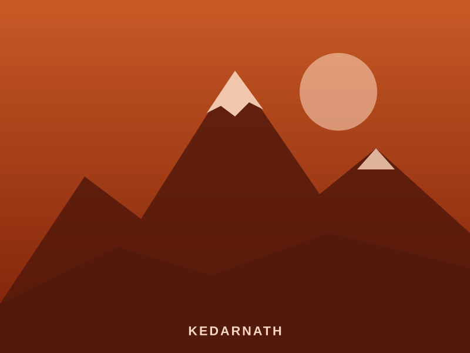
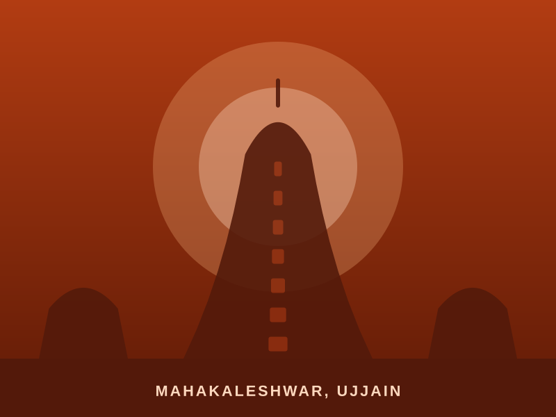
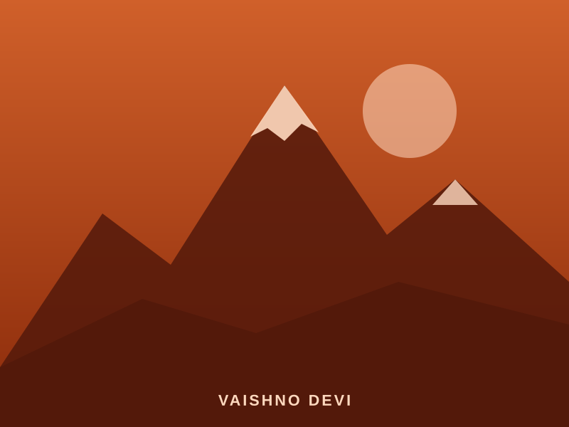

SeasonalGroup
Uttarakhand · Haridwar → Rishikesh
Char Dham Yatra
4Temples
12 days11 nights
UttarakhandState
From₹38,500 / person
View Journey
Fully guided pilgrimages across India — from the Himalayan dhams to the temples of the south — with comfortable stays, private transport and well-planned darshan schedules.

01 TourFrom ₹38,500Sacred circuitChar Dham YatraYamunotri, Gangotri, Kedarnath & Badrinath — the four Himalayan dhams.View tours
04 ToursFrom ₹9,500Sacred circuitJyotirlinga DarshanKedarnath, Kashi Vishwanath, Mahakaleshwar, Omkareshwar, Somnath & Nageshwar.View tours
03 ToursFrom ₹9,500Sacred circuitShakti Peeth YatraMata Vaishno Devi, Harsiddhi in Ujjain and Kamakshi Amman in Kanchipuram.View toursNorth, South, East, West and Central India — each itinerary blends temple visits with the history and living traditions behind them.
10 tours available
We handle the logistics end to end, so every day of your journey is about the experience.
Routes sequenced around temple timings, festivals and travel distances for a well-paced trip.
Local experts who share the history, legends and rituals behind every shrine you visit.
Hand-picked, clean accommodation located close to the temples on your route.
Clear per-person pricing with inclusions listed upfront — no surprises on the road.
A simple, guided booking process with a dedicated travel coordinator.
Pick a featured journey or tell us where you’d like to go.
Adjust dates, hotels and pace for individuals, families or groups.
Secure your booking with all major cards accepted.
Our team stays in touch throughout your journey, from pickup to drop.
Every package can be run as a private tour or a group departure. We’ll tailor the itinerary, vehicles and accommodation to your group’s size and needs.
Can’t find what you’re looking for? Call or WhatsApp us on +91 73374 28436.
Each tour has its own starting point — Hyderabad, Coimbatore or Vijayawada. Pickup and drop details are listed on each tour page, and we can arrange connections from other cities.
Yes, listed prices are per-person starting rates. The final price depends on group size, hotel category and travel dates.
Absolutely. You can add or remove temples, change hotels or extend your stay. Share your preferences and our team will send a revised plan.
Yes. Let us know about any mobility needs and we’ll plan a comfortable pace, suitable rooms and assisted access wherever possible.
We accept Visa, Mastercard, American Express and JCB cards.
Share a few details and a Sanchari travel expert will send you a tailored itinerary and quote.
Mon – Fri: 08:00 – 20:00
New yatras, departure dates and travel tips — straight to your inbox.